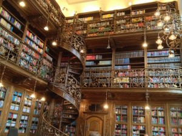

Quelle est la plus belle bibliothèque de Munich ?!
Dernièrement, je suis allé plusieurs fois (jusqu'à présent seulement 3x) à la bibliothèque pour travailler. Non non, je suis toujours employé chez mgm technology partners, et j'y ai aussi mon bureau – un très beau d'ailleurs. Mais de temps en temps, je dois rédiger des documents plus longs. Ou bien j'ai des rendez-vous en ville, je suis à vélo, et je ne veux pas faire un aller-retour à mgm pour une heure, puis rentrer chez moi.
C'est là que les bibliothèques entrent en jeu. Tout d'abord, les bibliothèques sont belles (beaucoup). Et pour travailler de manière concentrée, l'interdiction de téléphoner est extrêmement utile. Et c'est tout simplement un agréable changement par rapport au bureau. C'est pourquoi je cherche la plus belle bibliothèque de Munich. Ce que l'on trouve beau est une question de goût. Mais beaucoup de choses entrent en ligne de compte : à quoi elle ressemble, comment sont les tables, comment travaille-t-on avec un ordinateur portable, que peut-on y apporter... Votre goût personnel compte.
Je vais donc mentionner ici les bibliothèques que j'ai déjà visitées. Et si vous me présentez de belles bibliothèques, je serai ravi de les explorer.
- Deutsches Museum : Mon favori actuel : Grandes tables pour travailler, beaux locaux, généralement beaucoup de place. Bibliothèque juridique, LMU : Il semble qu'il y en ait plusieurs. Celle où je suis allé n'était pas du tout belle. Je m'attendais à plus de la part des juristes…
- Bibliothèque juridique à la mairie, bibliothèque municipale : OK, les juristes savent faire une bibliothèque ! Cette bibliothèque est un bijou ! L'emplacement est central, l'atmosphère studieuse. L'accès est correct (casiers devant la bibliothèque, ordinateur portable autorisé, sacoche d'ordinateur non). Sympa : Il y a un accès Wi-Fi ici !

Bibliothèque juridique à la mairie
- Institut de mathématiques de la LMU : Les livres y sont beaux (ce sont des livres de maths après tout…). La bibliothèque était déjà usée quand j'étais étudiant, et depuis, je ne crois pas qu'ils aient rénové ou réparé quoi que ce soit.
- StaBi, bibliothèque d'État : Grande, assez sympa, belles tables, belle salle. Un peu anonyme.
Hors compétition, les bibliothèques suivantes :
- Institut de mathématiques de la TUM, Garching : Modérément belle, mais extrêmement pratique à utiliser : On entre avec son sac, on sort son ordinateur portable, les tables ont une alimentation électrique…
- Bibliothèque technique nationale, Prague : La plus belle bibliothèque que j'aie jamais vue. Très moderne, idéale pour travailler. Peut-être un peu grande et pleine…
Quels sont vos favoris ? Faites-le moi savoir, je suis curieux.
Cordialement, Till.